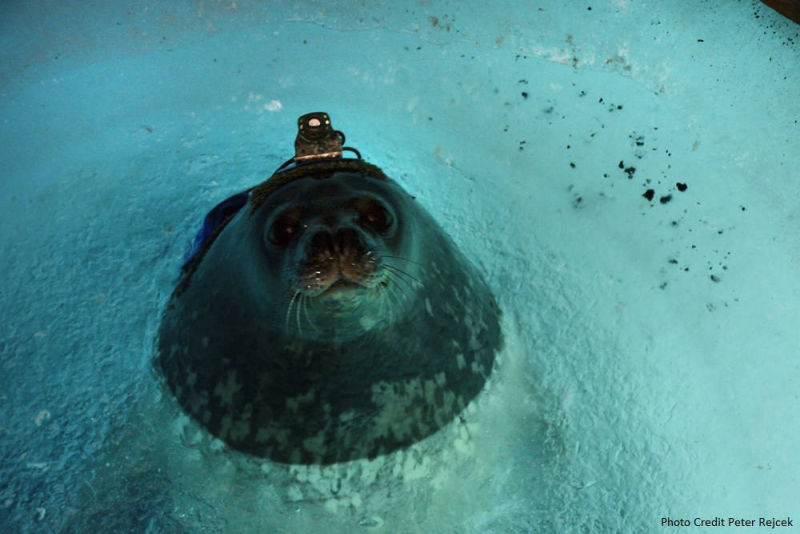
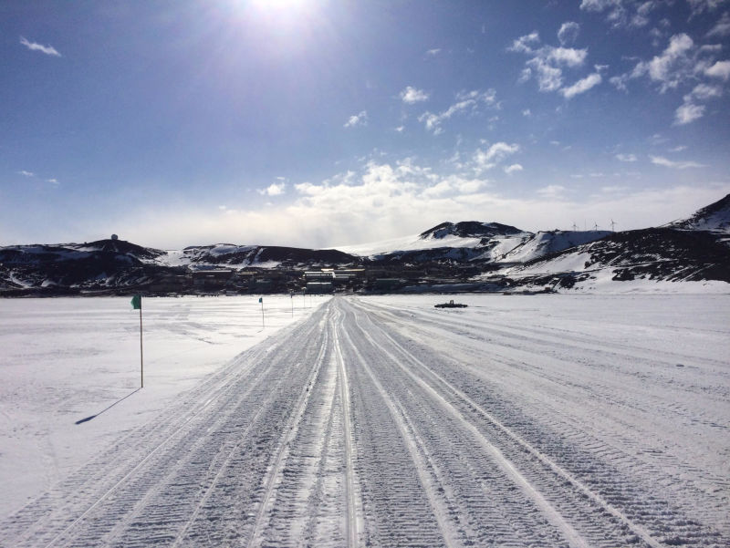
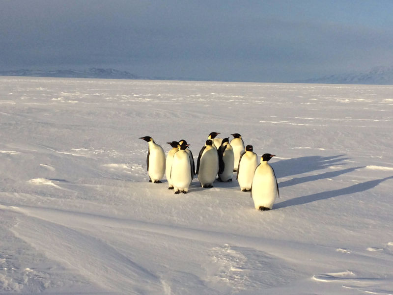
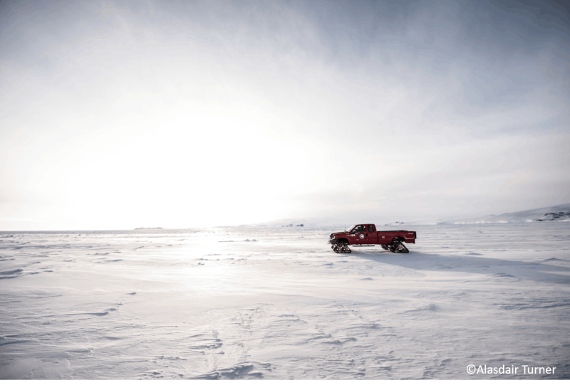

Studying the adaptations enabling survival in one of the harshest places on Earth
It's one of the coldest and driest places on our planet, and yet Antarctica is teeming with life. The waters surrounding the continent are filled with single cell organisms, invertebrates, and fish, but possibly more surprising are the marine mammals and birds that call Antarctica home. Krogh's principle states that among the diversity of animal species there will be one ideally suited as an experimental model for any biological problem. The ability to survive in such a hostile environment make the seals and penguins that live there amazing examples of physiological adaptation that can help us better understand species throughout the world.
My first trip to Antarctica was spent studying Weddell seals in an effort to better understand how they can navigate under the ice in near complete darkness as well as the cost of diving for such extended periods to find fish and new breathing holes. I'm excited for the opportunity to return this fall to learn more about emperor penguins and how they dive to such incredible depths!